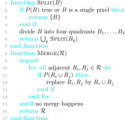
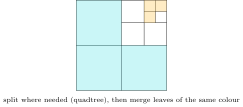

Algorithm

 into quadrants, then merge adjacent regions whose union satisfies it.
into quadrants, then merge adjacent regions whose union satisfies it.
: homogeneity predicate, e.g. or variance below a threshold (optical), coefficient of variation compatible with speckle (SAR).
Picture

Intuition
Zoom in only where the image is busy; then glue back together the pieces that turned out to be the same thing.
Pitfall
The result depends on the order of merges and on block alignment: a region straddling a quadtree boundary is split early and must be recovered by merging.